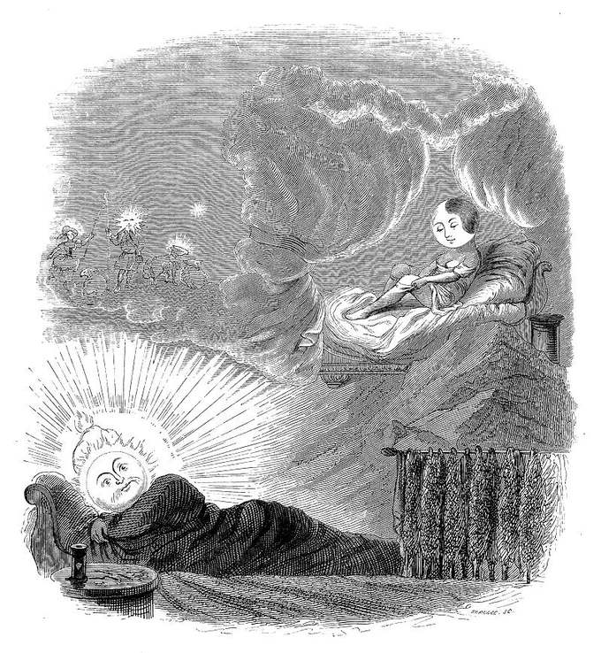

observe a repetição
Alguns sonhos tocam emoções, símbolos e percepções que merecem ser anotados com calma.
A projeção astral é tratada aqui com cuidado: sem medo, sem promessa exagerada e sem sensacionalismo.

Alguns sonhos tocam emoções, símbolos e percepções que merecem ser anotados com calma.
Antes de buscar experiências fora do corpo, fortaleça respiração, proteção, oração e equilíbrio emocional.
A espiritualidade deve aproximar você do bem, da consciência e da responsabilidade, não do pânico.
Você pode usar mantras, visualização de luz, movimentação energética e uma oração simples para preparar seu campo.
Veja a página de práticas energéticas para uma sequência com EV, chakras e mantras.